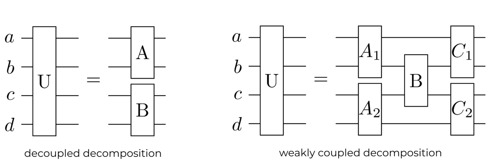
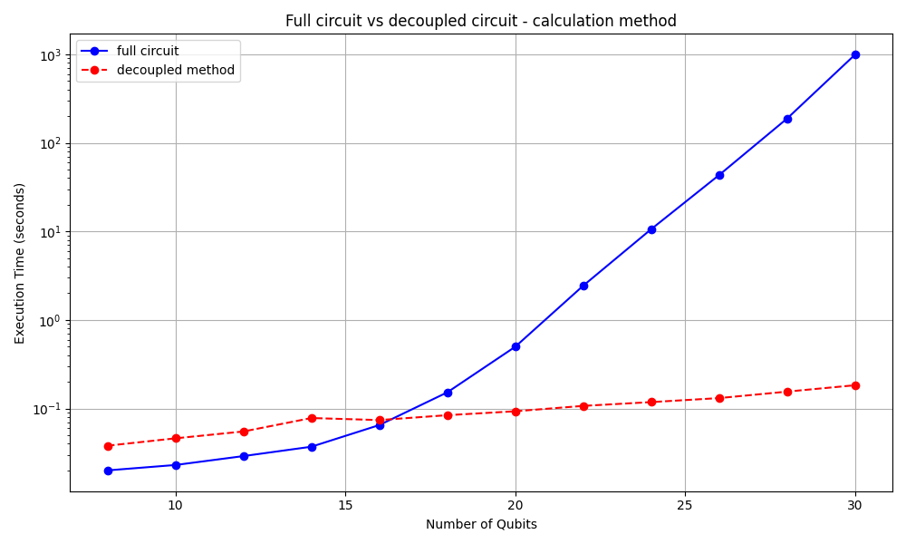
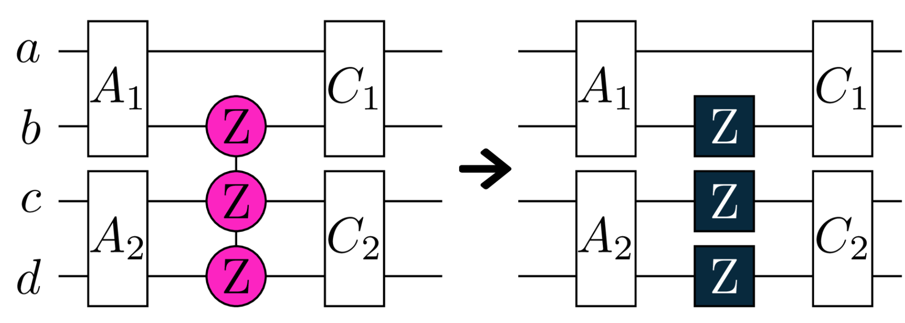
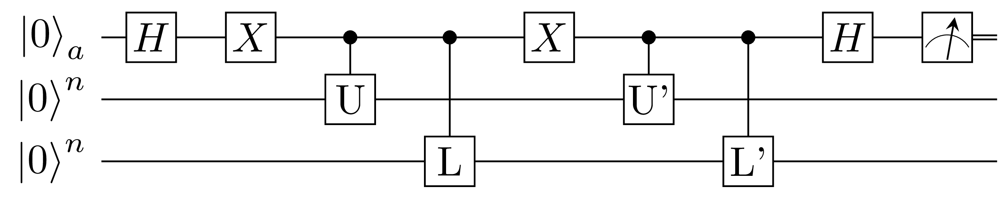
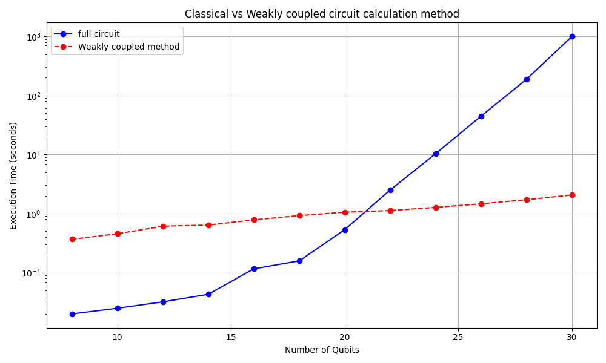
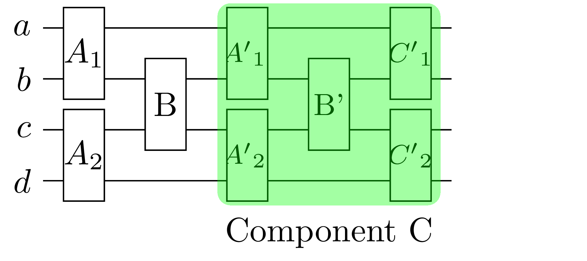
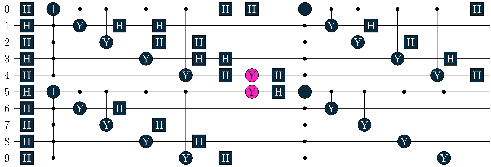

During the calculation of expectation values of quantum circuits, a significant amount of computational time can be saved by decomposing the underlying circuit in an efficient manner. One prominent algorithm for this purpose is quantum circuit cutting, which divides a large quantum circuit into smaller, executable sub-circuits, processes them separately on quantum hardware, and then combines the results classically to approximate the output of the original circuit.
Alternatively, a computationally less expensive approach involves leveraging specific structural properties of the circuit for decomposition. However, this method is only applicable when such structural characteristics are present. In this work, we present algorithms tailored for specific circuit structures and explore two distinct cases of circuit decomposition, demonstrating their implementation and advantages. The primary advantage of splitting circuits lies in the following structural considerations.

Circuits are either split horizontally if it is in a fully disconnected form, or vertially if it has a weak link holding different parts together. For each disconnected subcircuit we can simplify the complexity of the calculations. Both structures benefit from horizontally disconnected subcircuits, however vertical decomposition imposes specific constraints on the unsplittable part \(B\), which must be expressible as a Pauli gate.
Fully disconnected circuit (decoupled)
At first we look at the case \(U = AB\), where \(A\) and \(B\) are entirely separate. In this scenario we can decompose the calculation of the expectation value \(\braket{H}_U\), by splitting our circuit horizontally. \[ \braket{H}_U = \bra{0}U^\dagger H U\ket{0} \]\[ = \braket{H}_{AB} = \bra{0}(AB)^\dagger H (AB)\ket{0} \]\[ = \bra{0}A^\dagger H_A A\ket{0} + \bra{0}B^\dagger H_B B\ket{0} + \bra{0}(AB)^\dagger H_{AB} (AB)\ket{0} + c_H \]
Here we decomposed the Hamiltonian \(H = \sum_{k} c_k P_k\). This is done by verifying whether all qubits of the Paulistring \(P_k\) are a subset of the qubits in the subcircuits \(A\) and \(B\), if this condition is satisfied, we identify the corresponding Hamiltonians \(H_A\) and \(H_B\). If the qubits of \(P_k\) span both qubit sets of the subcircuits, we classify it as a cross-term \(H_{AB}\) with Paulistring \(P_k^{AB}\). The remaining \(c_H\) represents the real-valued constant of the Hamiltonian. This decomposition on it’s own does not reduce the complexity of the calculation yet. If we want to do so, we have to further decompose the cross-term \(H_{AB}\): \[H_{AB} = \sum_k c_k P_k^{AB}\] with \(P_k^{AB} = P_k^A \otimes P_k^B\), where \(P_k^A\) and \(P_k^B\) are Paulistrings acting on the qubit sets of subcircuits \(A\) and \(B\), respectively, the expectation value of the cross term can be expressed in a decomposed form:
\[ \bra{0}(AB)^\dagger H_{AB} (AB)\ket{0} = \sum_k c_k \cdot (\bra{0}A^\dagger P_k^A A\ket{0} \cdot \bra{0}B^\dagger P_k^B B\ket{0}) \] where \(c_k\) is the coefficient of the partial Paulistring of \(H_{AB}\). In the following we look at the decoupled decomposition implemented in Tequila and compare the calculation time against the computation with a full (undecomposed) circuit.
Code
import tequila as tqimport networkx as nximport timedef split_horizontal(U):""" Deconstructs a splitable Unitary into list of independent sub circuits. If not splitable it will return [U] """ connections = U.to_networkx() qubits =list(nx.connected_components(connections)) circuits = []for c in qubits: sub_circuit_gates = [gate for gate in U.gates ifall(q in c for q in gate.qubits)] sub_circuit = tq.QCircuit(gates=sub_circuit_gates) circuits.append(sub_circuit)return circuitsdef calculate_ab(H, circuits):""" Maps Hamiltonian parts to a (sub) cuircuit as a local term or stores the cross terms and calculates the Expectation Values with each local and cross term. """ local_terms = [] cross_terms = [] constant =0.0for ps in H.paulistrings: qubits = ps.qubits isCross =Trueiflen(qubits) ==0: constant += ps.coeff continuefor circuit in circuits:# check if local or cross termifset(qubits).issubset(set(circuit.qubits)): local_terms.append((circuit, ps)) isCross =Falsebreakif isCross: cross_terms.append(ps) exp =float(constant.real) exp += calculate_local(local_terms) exp += calculate_cross(circuits, cross_terms) return expdef calculate_local(local_terms):""" Calculates the Expectation Value for the local terms where the list local_terms containts tuples of a (sub) curcuit and the corresponding Pauli-Strings of the Hamiltonian. """ exp =0.0for (circuit, ps) in local_terms: H = tq.QubitHamiltonian.from_paulistrings(ps)ifnotall(q in circuit.qubits for q in H.qubits):raiseException("!!!") exp += tq.ExpectationValue(H=H, U=circuit)return expdef calculate_cross(circuits, cross_terms):""" Calculates the Expectation Value for the cross terms. Stores calculation results in dict to avoid the calculation of duplicates. """ all_expvals = {} exp =0.0for ps in cross_terms: parts = [] used = {i:Falsefor i in ps.qubits} tmp =float(ps.coeff.real)for circuit in circuits: lc = {}for q in ps.qubits:if q in circuit.qubits: lc[q] = ps[q] used[q] =True parts.append(lc) ifnotall(used.values()): care = [i for i in used ifnot used[i]]ifnotall([ps[q] =='Z'for q in care]):continuefor i inrange(len(circuits)): ui = circuits[i] hi = tq.QubitHamiltonian.from_paulistrings(tq.PauliString(parts[i]))iflen(hi) ==0:continue key = (str(hi), i)if key in all_expvals: ei = all_expvals[key]else: ei = tq.ExpectationValue(H=hi, U=ui) all_expvals[key] = ei tmp *= ei exp += tmpreturn exp

The figure illustrates the performance difference between the classical expectation value calculation on the full circuit and the proposed method for exploiting decoupled circuit structures. From the results, we observe a significant computational advantage for circuits with more than \(16\) qubits. The circuits were split into two parts, reducing the computational complexity of each subcircuit to half of the original complexity. We can see that the computational expense for preparing and splitting the circuit, compared to the overall computational time, becomes negligible for higher qubit counts but remains significant for smaller circuits.
Weakly coupled circuit
Now we aim to decompose a circuit with the form \(\text{U = ABC}\), where \(B\) is a small component that couples the entire circuit and has the form: \[B = e^{-i\cdot\frac{\theta}{2}\cdot P}\]
Here, \(P\) is a Paulistring with length \(n\) and \(A\) and \(C\) are independent, but each connected to \(B\). Since \(A\) and \(C\) contain fully disconnected parts, we can apply our horizontal decomposition method to each, thereby achieving a computational advantage. To fully decouple the circuit, we deconstruct \(B\) into \(n\) individual Pauligates.

The new Pauligates are all single-qubit gates, making them highly suitable for the horizontal decomposition. During the preperation of the subcircuits, they can be assigned to their respective groups with minimal effort. Now lets look at the deconstruction for \(B = e^{-i\cdot\frac{\theta}{2}\cdot P} = cos(\frac{\theta}{2}) - i \cdot sin(\frac{\theta}{2})\cdot P\):
\[ ABC = cos(\frac{\theta}{2}) \cdot AC - i \cdot sin(\frac{\theta}{2})\cdot APC\]
For simplicity lets call \(cos(\frac{\theta}{2}) = a\) and \(sin(\frac{\theta}{2}) = b\). We can then construct the expectation value \(\braket{H}_U = \bra{0}(ABC)^{\dagger} H \: ABC \ket{0}\) out of this: \[ = a^2 \cdot \bra{0}(AC)^\dagger H \: AC\ket{0} + b^2 \cdot \bra{0}(APC)^\dagger H \: APC \ket{0} \]\[ - abi \cdot \bra{0}(AC)^\dagger H \: APC \ket{0} + abi \cdot \bra{0}(APC)^\dagger H \: AC \ket{0} \]
We split the calculation into four parts. The first two expectation values can now be calculated using the previously mentioned decoupled method. The remaining terms are overlaps, which we refer to as cross terms.
Simplification of the cross terms
The cross terms form an imaginary scalar. Since these terms are Hermitian conjugates, they can be rewritten in a simpler form. For any complex number \(x + y \cdot i\) and its complex conjugate, the following identity holds: \((x+y\cdot i) - (x-y\cdot i) = 2yi = 2i \cdot \textbf{Im}(x+y\cdot i)\), where \(\textbf{Im}(\cdot)\) denotes the imaginary component of a complex number. Applying this identity to our cross terms yields:
\[ - abi \cdot \bra{0}(A C)^\dagger H \: A P C \ket{0} + abi \cdot \bra{0}(A P C)^\dagger H \: A C \ket{0} \]\[ = - abi \cdot (\bra{0}(A C)^\dagger H \: A P C \ket{0} - abi \cdot \bra{0}(A P C)^\dagger H \: A C \ket{0}) \]\[ = - abi \cdot (\bra{0}(A C)^\dagger H \: A P C \ket{0} - h.c) \]\[ = - abi \cdot (2i \cdot\textbf{Im}(\bra{0}(A C)^\dagger H \: A P C \ket{0})) \]\[ = 2ab\cdot \textbf{Im}(\bra{0}(A C)^\dagger H \: A P C \ket{0}) \]
This transformation reduces the number of required steps and results in a real value. Therefore, the total expectation value \(\braket{H}_U\) is given by: \[ a^2 \cdot \bra{0}(AC)^\dagger H \: AC\ket{0} + b^2 \cdot \bra{0}(APC)^\dagger H \: APC \ket{0} + 2ab\cdot \textbf{Im}(\bra{0}(A C)^\dagger H \: A P C \ket{0}) \]
For our decomposition approach, the implementation would follow this structure:
Code
def calculate_abc(H, A, B, C):""" Calculates the Expectation Value for the given Hamiltonian H and the Unitary U = A*B*C with the ABC-Formula. """ psi, P = h.convert_to_pauli(B)# Our Calculation: a = (0.5*psi).apply(tq.numpy.cos) b = (0.5*psi).apply(tq.numpy.sin) a_term = tq.ExpectationValue(H=H, U=A+C) b_term = tq.ExpectationValue(H=H, U=A+P+C) local_term = (a**2) * a_term + (b**2) * b_term _, img = tq.BraKet(bra=A+C, ket=A+P+C, operator=H) cross_term =2*a*b*(img)return local_term + cross_term
Overlap implementation
So far, we have not exploited the circuit structure in our cross-term calculations. This is critical because it could become a bottleneck for the overall computational complexity.
We know that the overlap we created \(\bra{0}(A C)^\dagger H \: A P C \ket{0}\), is splitable. Lets split \(AC\) into an \(\textbf{Upper}\) and \(\textbf{Lower}\) part of the full circuit. We call the parts of \(APC\) the same, but mark them as \(\textbf{Upper'}\) and \(\textbf{Lower'}\) because they contain the extra Pauli gates from the decomposition of the circuit component \(B\) that couples \(A\) and \(C\).
Before simplification, we must examine the standard BraKet \(\braket{\psi | \phi}\) implementation. The BraKet overlap gets constructed in the following circuit, such that it is able to calculate the overlap between two states.

For simplicity we depict the \(\textbf{Upper}\) part as Unitary \(U\) and \(\textbf{Lower}\) as \(L\). The calculation requires an auxiliary qubit to control the execution of these subcircuits. While this adds some overhead, the computational advantage becomes significant when \(U\) and \(L\) are sufficiently large, as the complexity reduction from processing them separately outweighs the control cost. We achive this with following method. We define the overlap \(\braket{\psi_0 | \psi_1}\) between \(U \otimes L\) and the slightly modified \(U' \otimes L'\) (containing the extra Pauli gates). These form following states: \[ (U \otimes L)\ket{0} = \ket{\psi_{0}}, \: \: \: (U' \otimes L') \ket{0} = \ket{\psi_1}\] After the second Hadamard gate of the auxiliary, the circuit prepares the state: \[ \frac{1}{\sqrt{2}} \cdot (\ket{+} \ket{\psi_0} + \ket{-} \ket{\psi_1})\] This is because the \(X\) gates of the auxiliary qubit control / anti control - \(\ket{\psi_{0}}\) and \(\ket{\psi_{1}}\). In the end measuring the ancilla with Pauli \(Z\) (displayed as measurement symbol above) gives as output: \[ \bra{0}(U \otimes L)^{\dagger} (U' \otimes L') \ket{0} = \braket{\psi_0 | \psi_1} \]
This however can further be simplified analytically to exploit the structure of \(A\) and \(C\):
\[ \frac{1}{\sqrt{2}} \cdot (\ket{+} \otimes (U \otimes L \: \ket{0})) + \frac{1}{\sqrt{2}} \cdot (\ket{-} \otimes (U' \otimes L' \: \ket{0})) \equiv \ket{\psi}\]
\[ \bra{\psi} Z \otimes 1 \otimes 1 \ket{\psi} = \]
With every previously described step we can now implement the weakly coupled decomposition to exploit a circuit’s structure for a computational advantage. The core functionality resides in the function calculate_abc, which handles the primary decomposition calculation. Because \(\textbf{Im}(\bra{0}(A C)^\dagger H \: A P C \ket{0})\) forms an overlap, small_braket gets called to further reduce the complexity.
Code
def convert_to_pauli(U: tq.gates.ExpPauli):""" Converts an Exponential Pauli U of form e^(-i*angle/2 *P) to: angle and PauliGate P. Restrictions: - only one or no angle allowed """map= U.make_parameter_map() angle_parameters =list(map.keys())iflen(angle_parameters) >1orlen(U.gates) >1:returnNoneiflen(angle_parameters) ==0: angle =Noneelse: angle = tq.Variable(angle_parameters[0])return angle, tq.gates.PauliGate(U.gates[0].paulistring)def calculate_abc(H, A, B, C):""" Calculates the Expectation Value for the given Hamiltonian H and the Unitary U = A*B*C with the ABC-Formula. """# Do the decomposition psi, P = convert_to_pauli(B) ac_up, ac_down = split_2(A+C) apc_up, apc_down = split_2(A+P+C)# Calculation of every part: a = (0.5*psi).apply(tq.numpy.cos) b = (0.5*psi).apply(tq.numpy.sin) a_term = ab.calculate_ab(circuits=[ac_up, ac_down], H=H) b_term = ab.calculate_ab(circuits=[apc_up, apc_down], H=H) local_term = (a**2) * a_term + (b**2) * b_term _, img = small_braket(ac_up, ac_down, apc_up, apc_down, H) cross_term =2*a*b*(img)return local_term + cross_termdef small_braket(bra_up, bra_down, ket_up, ket_down, H):""" Calculates Overlap of the form <|(AC)^{\dagger} H APC|> or <|(ACP)^{\dagger} H AC|>. Assumes A and C to be horizontally splitable. """ result_r =0 result_i =0for ps in H.paulistrings: up_ps = {} down_ps = {}for p in ps.qubits:if p in ket_up.qubits or p in bra_up.qubits: up_ps[p] = ps[p]if p in ket_down.qubits or p in bra_down.qubits: down_ps[p] = ps[p] coeff =float(ps.coeff.real) h_up = tq.QubitHamiltonian.from_paulistrings([tq.PauliString(up_ps)]) h_down = tq.QubitHamiltonian.from_paulistrings([tq.PauliString(down_ps)]) a_real, a_img = tq.BraKet(bra=bra_up, ket=ket_up, operator=h_up) b_real, b_img = tq.BraKet(bra=bra_down, ket=ket_down, operator=h_down) c_real, c_img = tq.BraKet(bra=ket_up, ket=bra_up, operator=h_up) d_real, d_img = tq.BraKet(bra=ket_down, ket=bra_down, operator=h_down) result_r +=0.5*(a_real*b_real - a_img*b_img) +0.5*(c_real*d_real - c_img*d_img)iflen(down_ps) ==0: # Hamiltonian only acts on the upper parts result_i +=0.5*a_img +0.5*c_imgcontinueiflen(up_ps) ==0: # " - lower parts result_i +=0.5*b_img +0.5*d_imgcontinue result_ac =0.5* a_img +0.5* c_img result_bd =0.5* b_img +0.5* d_img result_i += coeff * (result_ac * result_bd)return result_r, result_i

The figure illustrates the performance difference between the classical expectation value calculation and the proposed method for exploiting weakly coupled circuit structures. From the results, we observe that the computational advantage becomes significant only for circuits with more than \(>20\) qubits. The complexity of the calculation was reduced to multiple factors of half the original complexity.
Complexity analysis
To evaluate the potential of our decomposition methods, we examine their computational complexity.
Decoupled method
The computational complexity follows directly from the state space reduction. For an \(n\)-qubit circuit with \(2^n\) basis states, decomposition in two equal subcircuits of size \(\frac{n}{2}\) yeilds:
This represents the optimal case. For asymmetric splits where one (bigger) subcircuit contains \(m < n\) -qubits, the complexity becomes dominated by the larger partition: \(\mathcal{O}(2^{m}).\)
Weakly coupled method
In this case, the overall theoretical complexity is similar to that of the decoupled method, although with a greater number of subcircuits. To analyze this, we examine our decomposition:
\[ \braket{H}_U = a^2 \cdot \bra{0}(AC)^\dagger H \: AC\ket{0} + b^2 \cdot \bra{0}(APC)^\dagger H \: APC \ket{0} + 2ab\cdot \textbf{Im}(\bra{0}(A C)^\dagger H \: A P C \ket{0}) \]
This involves the evaluation of two expectation values and an overlap, each requiring operations on the full circuit size. If \(A\) and \(C\) are splitable in two equal subcircuits, the overlap calculation involves four partial evaluations acting on half the qubits, but each requiring an auxiliary qubit: \[ \frac{1}{2} \cdot \bra{0}(U \: U') \ket{0} \cdot \bra{0}(L \: L') \ket{0} + \frac{1}{2} \cdot \bra{0}(U' \: U) \ket{0} \cdot \bra{0}(L' \: L) \ket{0} \]
The total the complexity is \(2 \cdot ( 2 \cdot 2^{\frac{n}{2}} ) + 4 \cdot 2^{\frac{n}{2} + 1}\), where the first term accounts for splitting the two expectation values, each into two equally sized subcircuits, while the second term represents the evaluation of the deconstructed overlap acting on \(\frac{n}{2}+ 1\) qubits, making the complexity \(\mathcal{O}(2^{\frac{n}{2} + 1})\). For unequal splits, the complexity is determined by the larger partition (denoted by size \(m\)), yielding a complexity of \(\mathcal{O}(2^{m + 1})\).
However in practice, the computation time is significantly influenced by the number of subcircuits required to construct the expectation values. This dependence arises primarily from the overhead associated with initializing computational objects for each subcircuit, which adds complexity to the overall calculation process. The above performance plots illustrate the circuit sizes for which this decomposition approach becomes computationally advantageous.
Outlook for recursive structures
A promising use case for our weakly coupled method involves circuits with multiple weak connections distributed throughout their structure. In such scenarios, we can adapt the core methodology by decomposing the circuit recursivly. Consider an example circuit with the following structure:

We can see that \(ABC\) follows the structure we have seen before, but \(C = A'B'C'\) has the same structure in itself. Lets write out our decomposition with \(B = e^{-i\cdot\frac{\theta}{2}\cdot P}\):
\[ a^2 \cdot \bra{0}(AA'B'C')^\dagger H \: AA'B'C'\ket{0} + b^2 \cdot \bra{0}(APA'B'C')^\dagger H \: APA'B'C' \ket{0} \]\[ + 2ab \cdot \textbf{Im}(\bra{0}(A A'B'C')^\dagger H \: A P A'B'C' \ket{0}) \]
Here each element has the right structure for the weakly coupled decomposition with a single occuring weak link \(B'\), which can be decomposed in 8 smaller components like discussed in the previous chapter. For this we just summarize \(AA'\) and \(APA'\) to \(A_{\text{new}}\) which both fullfill the requirements for our proposed weakly coupled decomposition.
Summary
Our proposed methods achieve substantial reductions in computation time through strategic circuit decomposition. By partitioning the original circuit into smaller subcircuits, we exponentially decrease the operational dimensionality, leading to significant complexity reduction. While this tutorial specifically examines the case of dividing \(n\) qubits into two (for decoupled) / multiple (for weakly coupled) - subcircuits of \(\frac{n}{2}\) qubits, the methods remain valid for any partition size that satisfies the structural requirements.
We focus on 2-way decomposition for two key reasons:
The two-subcircuit case provides clearer demonstration while maintaining all essential features of the general approach
If the structural properties are given, we can recursively split the resulting circuits from the first decomposition as often as we want.
From the performance comparison plots, we observe that a computational advantage is achieved for larger circuits, where the threshold in computational costs for creating multiple smaller circuits is exceeded. These methods show great promise for various computational tasks; however, they are highly dependent on the underlying circuit structure and do not provide a universal solution for arbitrary circuits.
Appendix: Visualization of Testing Circuit
To test both calculation methods, suitable circuits were required. For constructing fully disconnected test circuits, we begin by randomly assigning gates to an empty circuit acting on half the number of qubits in the target circuit. This circuit is then duplicated to create a second group acting on the remaining qubits. This will result in a circuit with two groups each only interacting with qubits in the same group, which makes it splitable with the fully disconnected method.
In the case of weakly coupled circuits, we follow the same initial construction process but introduce a coupling between the groups, at an arbitary point (in our example we choose the middle of the circuit). The coupling is implemented through a unitary operation of the form \(B = e^{-i\cdot\frac{\theta}{2}\cdot P}\), where the Paulistring \(P\) is allowed to act on qubits of both groups. The following figure shows an example circuit for testing the weakly coupled circuit calculation method, consisting of two groups with a total of 10 qubits. The groups are weakly linked by a Pauli gate (marked in pink).

We also need a Hamiltonian to form our expectation value \(\braket{H}_U\). For this we consider the two groups, \(X\) acting on \(1,2, ... \frac{n}{2}\) and \(Y\) acting on \(\frac{n}{2} + 1, ... n-1, n\). Our test Hamiltonian is then simply constructed with one Paulistring acting on each group and one Paulistring covering both groups: \[H = \bigotimes_{i \in X} Z(i) + \bigotimes_{j \in Y} Z(j) + \bigotimes_{k \in X \cup Y} Z(k) \] So for the \(10\) qubit case: \(H = Z(1)Z(2)Z(3)Z(4)Z(5) + Z(6)Z(7)Z(8)Z(9)Z(10) + Z(1)Z(2)Z(3)Z(4)Z(5)Z(6)Z(7)Z(8)Z(9)Z(10)\)
Appendix: Circuit splitting logic
The logic for preparing the underlying circuit for the proposed calculation method can be done like this:
Code
def split_2(U):""" Deconstructs a splitable Unitary into list of independent sub circuits. If not splitable it will return [U] """ connections = U.to_networkx() qubits =list(nx.connected_components(connections)) circuits = []for c in qubits: sub_circuit_gates = [gate for gate in U.gates ifall(q in c for q in gate.qubits)] sub_circuit = tq.QCircuit(gates=sub_circuit_gates) circuits.append(sub_circuit)return circuitsdef split_n(U):""" Tries to Split a Unitary in either 1 (unsplitable), 2 (AB-structure), or 3 parts with ABC structure, where A and C are splitable but B is not. """ A, rest = check_right(tq.QCircuit(gates=U.gates))if A isNone: # Unitary is not splitablereturn [rest] C, rest = check_right(tq.QCircuit(gates=list(reversed(rest.gates)))) B = tq.QCircuit(gates=list(reversed(rest.gates)))if C isNone:return [A, B] C = tq.QCircuit(gates=list(reversed(C.gates)))return [A, B, C]def check_right(U):""" Iterates through a QCircuit unitil it is splitable in reverse order. Returns either an Splitable and unsplitable part or None and unsplitable QCircuit. """ test = tq.QCircuit(U.gates) seperable =None count =len(U.gates)whilelen(test.gates) !=0: test.gates.pop() count -=1 connections = test.to_networkx() qubits =list(nx.connected_components(connections))if(len(qubits) >1): seperable = testbreak rest = tq.QCircuit(gates=U.gates[count:])return seperable, restdef decompose(H, U):""" Decomposes a Unitary U in (sub) circuits and calculates the Expectation Value in smaller steps. """ unitary_circuits = cg.split_2(U)# The Unitary was split into smaller parts for easy calciflen(unitary_circuits) >1: exp = ab.calculate_ab(H, unitary_circuits)return expelse: # The Unitary was not splitable circuits = cg.split_n(U)iflen(circuits) ==1:print("Could not split the Unitary")return tq.ExpectationValue(H=H, U=U)iflen(circuits) ==2: A, B = circuits C = tq.QCircuit() # test with Identity abc.calculate_abc(H, A, B, C)iflen(circuits) ==3: A, B, C = circuits abc.calculate_abc(H, A, B, C)print("Error: Could not calculate the Expectation Value")returnNone
Source Code
---title: "Automatic Decompositions"author: - name: Jonas Motyldate: "April 2025"image: "./Figures/previewimage.png"categories: [code]format: html: code-fold: true eval: true hard_line_breaks: truejupyter: python3execute: warning: false---# IntroductionDuring the calculation of expectation values of quantum circuits, a significant amount of computational time can be saved by decomposing the underlying circuit in an efficient manner.One prominent algorithm for this purpose is quantum circuit cutting, which divides a large quantum circuit into smaller, executable sub-circuits, processes them separately on quantum hardware, and then combines the results classically to approximate the output of the original circuit.Alternatively, a computationally less expensive approach involves leveraging specific structural properties of the circuit for decomposition. However, this method is only applicable when such structural characteristics are present.In this work, we present algorithms tailored for specific circuit structures and explore two distinct cases of circuit decomposition, demonstrating their implementation and advantages.The primary advantage of splitting circuits lies in the following structural considerations.<center>{width=700}</center><br>Circuits are either split horizontally if it is in a fully disconnected form, or vertially if it has a weak link holding different parts together. For each disconnected subcircuit we can simplify the complexity of the calculations.Both structures benefit from horizontally disconnected subcircuits, however vertical decomposition imposes specific constraints on the unsplittable part $B$, which must be expressible as a Pauli gate.# Fully disconnected circuit (decoupled)At first we look at the case $U = AB$, where $A$ and $B$ are entirely separate. In this scenario we can decompose the calculation of the expectation value $\braket{H}_U$, by splitting our circuit horizontally.$$ \braket{H}_U = \bra{0}U^\dagger H U\ket{0} $$$$ = \braket{H}_{AB} = \bra{0}(AB)^\dagger H (AB)\ket{0} $$$$ = \bra{0}A^\dagger H_A A\ket{0} + \bra{0}B^\dagger H_B B\ket{0} + \bra{0}(AB)^\dagger H_{AB} (AB)\ket{0} + c_H $$Here we decomposed the Hamiltonian $H = \sum_{k} c_k P_k$. <br>This is done by verifying whether all qubits of the Paulistring $P_k$ are a subset of the qubits in the subcircuits $A$ and $B$,if this condition is satisfied, we identify the corresponding Hamiltonians $H_A$ and $H_B$. <br>If the qubits of $P_k$ span both qubit sets of the subcircuits, we classify it as a cross-term $H_{AB}$ with Paulistring $P_k^{AB}$.The remaining $c_H$ represents the real-valued constant of the Hamiltonian. <br>This decomposition on it's own does not reduce the complexity of the calculation yet. If we want to do so, we have to further decompose the cross-term $H_{AB}$: <br>$$H_{AB} = \sum_k c_k P_k^{AB}$$with $P_k^{AB} = P_k^A \otimes P_k^B$, where $P_k^A$ and $P_k^B$ are Paulistrings acting on the qubit sets of subcircuits $A$ and $B$, respectively, the expectation value of the cross term can be expressed in a decomposed form:$$ \bra{0}(AB)^\dagger H_{AB} (AB)\ket{0} = \sum_k c_k \cdot (\bra{0}A^\dagger P_k^A A\ket{0} \cdot \bra{0}B^\dagger P_k^B B\ket{0}) $$ where $c_k$ is the coefficient of the partial Paulistring of $H_{AB}$. <br>In the following we look at the decoupled decomposition implemented in Tequila and compare the calculation time against the computation with a full (undecomposed) circuit.```{python}import tequila as tqimport networkx as nximport timedef split_horizontal(U):""" Deconstructs a splitable Unitary into list of independent sub circuits. If not splitable it will return [U] """ connections = U.to_networkx() qubits =list(nx.connected_components(connections)) circuits = []for c in qubits: sub_circuit_gates = [gate for gate in U.gates ifall(q in c for q in gate.qubits)] sub_circuit = tq.QCircuit(gates=sub_circuit_gates) circuits.append(sub_circuit)return circuitsdef calculate_ab(H, circuits):""" Maps Hamiltonian parts to a (sub) cuircuit as a local term or stores the cross terms and calculates the Expectation Values with each local and cross term. """ local_terms = [] cross_terms = [] constant =0.0for ps in H.paulistrings: qubits = ps.qubits isCross =Trueiflen(qubits) ==0: constant += ps.coeff continuefor circuit in circuits:# check if local or cross termifset(qubits).issubset(set(circuit.qubits)): local_terms.append((circuit, ps)) isCross =Falsebreakif isCross: cross_terms.append(ps) exp =float(constant.real) exp += calculate_local(local_terms) exp += calculate_cross(circuits, cross_terms) return expdef calculate_local(local_terms):""" Calculates the Expectation Value for the local terms where the list local_terms containts tuples of a (sub) curcuit and the corresponding Pauli-Strings of the Hamiltonian. """ exp =0.0for (circuit, ps) in local_terms: H = tq.QubitHamiltonian.from_paulistrings(ps)ifnotall(q in circuit.qubits for q in H.qubits):raiseException("!!!") exp += tq.ExpectationValue(H=H, U=circuit)return expdef calculate_cross(circuits, cross_terms):""" Calculates the Expectation Value for the cross terms. Stores calculation results in dict to avoid the calculation of duplicates. """ all_expvals = {} exp =0.0for ps in cross_terms: parts = [] used = {i:Falsefor i in ps.qubits} tmp =float(ps.coeff.real)for circuit in circuits: lc = {}for q in ps.qubits:if q in circuit.qubits: lc[q] = ps[q] used[q] =True parts.append(lc) ifnotall(used.values()): care = [i for i in used ifnot used[i]]ifnotall([ps[q] =='Z'for q in care]):continuefor i inrange(len(circuits)): ui = circuits[i] hi = tq.QubitHamiltonian.from_paulistrings(tq.PauliString(parts[i]))iflen(hi) ==0:continue key = (str(hi), i)if key in all_expvals: ei = all_expvals[key]else: ei = tq.ExpectationValue(H=hi, U=ui) all_expvals[key] = ei tmp *= ei exp += tmpreturn exp```<center>{width=600}</center>The figure illustrates the performance difference between the classical expectation value calculation on the full circuit and the proposed method for exploiting decoupled circuit structures.From the results, we observe a significant computational advantage for circuits with more than $16$ qubits. <br>The circuits were split into two parts, reducing the computational complexity of each subcircuit to half of the original complexity.We can see that the computational expense for preparing and splitting the circuit, compared to the overall computational time, becomes negligible for higher qubit counts but remains significant for smaller circuits.# Weakly coupled circuitNow we aim to decompose a circuit with the form $\text{U = ABC}$, where $B$ is a small component that couples the entire circuit and has the form: $$B = e^{-i\cdot\frac{\theta}{2}\cdot P}$$Here, $P$ is a Paulistring with length $n$ and $A$ and $C$ are independent, but each connected to $B$. Since $A$ and $C$ contain fully disconnected parts, we can apply our horizontal decomposition method to each, thereby achieving a computational advantage.To fully decouple the circuit, we deconstruct $B$ into $n$ individual Pauligates.<center>{width=480}</center><br>The new Pauligates are all single-qubit gates, making them highly suitable for the horizontal decomposition. During the preperation of the subcircuits, they can be assigned to their respective groups with minimal effort.<br>Now lets look at the deconstruction for $B = e^{-i\cdot\frac{\theta}{2}\cdot P} = cos(\frac{\theta}{2}) - i \cdot sin(\frac{\theta}{2})\cdot P$:$$ ABC = cos(\frac{\theta}{2}) \cdot AC - i \cdot sin(\frac{\theta}{2})\cdot APC$$For simplicity lets call $cos(\frac{\theta}{2}) = a$ and $sin(\frac{\theta}{2}) = b$. <br>We can then construct the expectation value $\braket{H}_U = \bra{0}(ABC)^{\dagger} H \: ABC \ket{0}$ out of this:$$ = a^2 \cdot \bra{0}(AC)^\dagger H \: AC\ket{0} + b^2 \cdot \bra{0}(APC)^\dagger H \: APC \ket{0} $$$$ - abi \cdot \bra{0}(AC)^\dagger H \: APC \ket{0} + abi \cdot \bra{0}(APC)^\dagger H \: AC \ket{0} $$We split the calculation into four parts. The first two expectation values can now be calculated using the previously mentioned decoupled method.The remaining terms are overlaps, which we refer to as cross terms.## Simplification of the cross termsThe cross terms form an imaginary scalar. Since these terms are Hermitian conjugates, they can be rewritten in a simpler form. For any complex number $x + y \cdot i$ and its complex conjugate, the following identity holds: $(x+y\cdot i) - (x-y\cdot i) = 2yi = 2i \cdot \textbf{Im}(x+y\cdot i)$, <br>where $\textbf{Im}(\cdot)$ denotes the imaginary component of a complex number. Applying this identity to our cross terms yields:$$ - abi \cdot \bra{0}(A C)^\dagger H \: A P C \ket{0} + abi \cdot \bra{0}(A P C)^\dagger H \: A C \ket{0} $$$$ = - abi \cdot (\bra{0}(A C)^\dagger H \: A P C \ket{0} - abi \cdot \bra{0}(A P C)^\dagger H \: A C \ket{0}) $$$$ = - abi \cdot (\bra{0}(A C)^\dagger H \: A P C \ket{0} - h.c) $$$$ = - abi \cdot (2i \cdot\textbf{Im}(\bra{0}(A C)^\dagger H \: A P C \ket{0})) $$$$ = 2ab\cdot \textbf{Im}(\bra{0}(A C)^\dagger H \: A P C \ket{0}) $$This transformation reduces the number of required steps and results in a real value. Therefore, the total expectation value $\braket{H}_U$ is given by:$$ a^2 \cdot \bra{0}(AC)^\dagger H \: AC\ket{0} + b^2 \cdot \bra{0}(APC)^\dagger H \: APC \ket{0} + 2ab\cdot \textbf{Im}(\bra{0}(A C)^\dagger H \: A P C \ket{0}) $$ For our decomposition approach, the implementation would follow this structure:```{python}def calculate_abc(H, A, B, C):""" Calculates the Expectation Value for the given Hamiltonian H and the Unitary U = A*B*C with the ABC-Formula. """ psi, P = h.convert_to_pauli(B)# Our Calculation: a = (0.5*psi).apply(tq.numpy.cos) b = (0.5*psi).apply(tq.numpy.sin) a_term = tq.ExpectationValue(H=H, U=A+C) b_term = tq.ExpectationValue(H=H, U=A+P+C) local_term = (a**2) * a_term + (b**2) * b_term _, img = tq.BraKet(bra=A+C, ket=A+P+C, operator=H) cross_term =2*a*b*(img)return local_term + cross_term```## Overlap implementationSo far, we have not exploited the circuit structure in our cross-term calculations. This is critical because it could become a bottleneck for the overall computational complexity.We know that the overlap we created $\bra{0}(A C)^\dagger H \: A P C \ket{0}$, is splitable.Lets split $AC$ into an $\textbf{Upper}$ and $\textbf{Lower}$ part of the full circuit. We call the parts of $APC$ the same, but mark them as $\textbf{Upper'}$ and $\textbf{Lower'}$ because they contain the extra Pauli gates from the decomposition of the circuit component $B$ that couples $A$ and $C$.Before simplification, we must examine the standard BraKet $\braket{\psi | \phi}$ implementation. <br>The BraKet overlap gets constructed in the following circuit, such that it is able to calculate the overlap between two states.<center>{width=600}</center><br>For simplicity we depict the $\textbf{Upper}$ part as Unitary $U$ and $\textbf{Lower}$ as $L$. <br>The calculation requires an auxiliary qubit to control the execution of these subcircuits. While this adds some overhead, the computational advantage becomes significant when $U$ and $L$ are sufficiently large, as the complexity reduction from processing them separately outweighs the control cost.We achive this with following method.<br>We define the overlap $\braket{\psi_0 | \psi_1}$ between $U \otimes L$ and the slightly modified $U' \otimes L'$ (containing the extra Pauli gates). These form following states:$$ (U \otimes L)\ket{0} = \ket{\psi_{0}}, \: \: \: (U' \otimes L') \ket{0} = \ket{\psi_1}$$After the second Hadamard gate of the auxiliary, the circuit prepares the state:$$ \frac{1}{\sqrt{2}} \cdot (\ket{+} \ket{\psi_0} + \ket{-} \ket{\psi_1})$$This is because the $X$ gates of the auxiliary qubit control / anti control - $\ket{\psi_{0}}$ and $\ket{\psi_{1}}$. <br>In the end measuring the ancilla with Pauli $Z$ (displayed as measurement symbol above) gives as output:$$ \bra{0}(U \otimes L)^{\dagger} (U' \otimes L') \ket{0} = \braket{\psi_0 | \psi_1} $$This however can further be simplified analytically to exploit the structure of $A$ and $C$:$$ \frac{1}{\sqrt{2}} \cdot (\ket{+} \otimes (U \otimes L \: \ket{0})) + \frac{1}{\sqrt{2}} \cdot (\ket{-} \otimes (U' \otimes L' \: \ket{0})) \equiv \ket{\psi}$$$$ \bra{\psi} Z \otimes 1 \otimes 1 \ket{\psi} = $$ $$\frac{1}{2} \cdot \bra{+}Z\ket{+} \cdot \: ... + \frac{1}{2} \cdot \bra{-}Z\ket{-} \cdot \: ... + \frac{1}{2}\cdot \bra{+}Z\ket{-}\cdot \bra{0}(U \otimes L) \: (U' \otimes L')\ket{0} + \frac{1}{2}\cdot \bra{-}Z\ket{+}\cdot \bra{0}(U' \otimes L') \: (U \otimes L)\ket{0}$$$$ = 0 + 0 + \frac{1}{2}\cdot 1 \cdot \bra{0}(U \: U') \ket{0} \cdot \bra{0}(L \: L') \ket{0} + \frac{1}{2}\cdot 1 \cdot \bra{0}(U' \: U) \ket{0} \cdot \bra{0}(L' \: L) \ket{0} $$## Weakly coupled implementation and comparisonWith every previously described step we can now implement the weakly coupled decomposition to exploit a circuit's structure for a computational advantage.The core functionality resides in the function **calculate_abc**, which handles the primary decomposition calculation.Because $\textbf{Im}(\bra{0}(A C)^\dagger H \: A P C \ket{0})$ forms an overlap, **small_braket** gets called to further reduce the complexity.```{python}def convert_to_pauli(U: tq.gates.ExpPauli):""" Converts an Exponential Pauli U of form e^(-i*angle/2 *P) to: angle and PauliGate P. Restrictions: - only one or no angle allowed """map= U.make_parameter_map() angle_parameters =list(map.keys())iflen(angle_parameters) >1orlen(U.gates) >1:returnNoneiflen(angle_parameters) ==0: angle =Noneelse: angle = tq.Variable(angle_parameters[0])return angle, tq.gates.PauliGate(U.gates[0].paulistring)def calculate_abc(H, A, B, C):""" Calculates the Expectation Value for the given Hamiltonian H and the Unitary U = A*B*C with the ABC-Formula. """# Do the decomposition psi, P = convert_to_pauli(B) ac_up, ac_down = split_2(A+C) apc_up, apc_down = split_2(A+P+C)# Calculation of every part: a = (0.5*psi).apply(tq.numpy.cos) b = (0.5*psi).apply(tq.numpy.sin) a_term = ab.calculate_ab(circuits=[ac_up, ac_down], H=H) b_term = ab.calculate_ab(circuits=[apc_up, apc_down], H=H) local_term = (a**2) * a_term + (b**2) * b_term _, img = small_braket(ac_up, ac_down, apc_up, apc_down, H) cross_term =2*a*b*(img)return local_term + cross_termdef small_braket(bra_up, bra_down, ket_up, ket_down, H):""" Calculates Overlap of the form <|(AC)^{\dagger} H APC|> or <|(ACP)^{\dagger} H AC|>. Assumes A and C to be horizontally splitable. """ result_r =0 result_i =0for ps in H.paulistrings: up_ps = {} down_ps = {}for p in ps.qubits:if p in ket_up.qubits or p in bra_up.qubits: up_ps[p] = ps[p]if p in ket_down.qubits or p in bra_down.qubits: down_ps[p] = ps[p] coeff =float(ps.coeff.real) h_up = tq.QubitHamiltonian.from_paulistrings([tq.PauliString(up_ps)]) h_down = tq.QubitHamiltonian.from_paulistrings([tq.PauliString(down_ps)]) a_real, a_img = tq.BraKet(bra=bra_up, ket=ket_up, operator=h_up) b_real, b_img = tq.BraKet(bra=bra_down, ket=ket_down, operator=h_down) c_real, c_img = tq.BraKet(bra=ket_up, ket=bra_up, operator=h_up) d_real, d_img = tq.BraKet(bra=ket_down, ket=bra_down, operator=h_down) result_r +=0.5*(a_real*b_real - a_img*b_img) +0.5*(c_real*d_real - c_img*d_img)iflen(down_ps) ==0: # Hamiltonian only acts on the upper parts result_i +=0.5*a_img +0.5*c_imgcontinueiflen(up_ps) ==0: # " - lower parts result_i +=0.5*b_img +0.5*d_imgcontinue result_ac =0.5* a_img +0.5* c_img result_bd =0.5* b_img +0.5* d_img result_i += coeff * (result_ac * result_bd)return result_r, result_i```<center>{width=600}</center>The figure illustrates the performance difference between the classical expectation value calculation and the proposed method for exploiting weakly coupled circuit structures.From the results, we observe that the computational advantage becomes significant only for circuits with more than $>20$ qubits.<br>The complexity of the calculation was reduced to multiple factors of half the original complexity.# Complexity analysisTo evaluate the potential of our decomposition methods, we examine their computational complexity.## Decoupled methodThe computational complexity follows directly from the state space reduction. For an $n$-qubit circuit with $2^n$ basis states, decomposition in two equal subcircuits of size $\frac{n}{2}$ yeilds:$$ 2^n \rightarrow 2\cdot 2^{\frac{n}{2}} \rightarrow \mathcal{O}(2^{\frac{n}{2}})$$This represents the optimal case. For asymmetric splits where one (bigger) subcircuit contains $m < n$ -qubits, the complexity becomes dominated by the larger partition: $\mathcal{O}(2^{m}).$## Weakly coupled methodIn this case, the overall theoretical complexity is similar to that of the decoupled method, although with a greater number of subcircuits. To analyze this, we examine our decomposition:$$ \braket{H}_U = a^2 \cdot \bra{0}(AC)^\dagger H \: AC\ket{0} + b^2 \cdot \bra{0}(APC)^\dagger H \: APC \ket{0} + 2ab\cdot \textbf{Im}(\bra{0}(A C)^\dagger H \: A P C \ket{0}) $$This involves the evaluation of two expectation values and an overlap, each requiring operations on the full circuit size. If $A$ and $C$ are splitable in two equal subcircuits, the overlap calculation involves four partial evaluations acting on half the qubits, but each requiring an auxiliary qubit:$$ \frac{1}{2} \cdot \bra{0}(U \: U') \ket{0} \cdot \bra{0}(L \: L') \ket{0} + \frac{1}{2} \cdot \bra{0}(U' \: U) \ket{0} \cdot \bra{0}(L' \: L) \ket{0} $$The total the complexity is $2 \cdot ( 2 \cdot 2^{\frac{n}{2}} ) + 4 \cdot 2^{\frac{n}{2} + 1}$, where the first term accounts for splitting the two expectation values, each into two equally sized subcircuits, while the second term represents the evaluation of the deconstructed overlap acting on $\frac{n}{2}+ 1$ qubits, making the complexity $\mathcal{O}(2^{\frac{n}{2} + 1})$. <br>For unequal splits, the complexity is determined by the larger partition (denoted by size $m$), yielding a complexity of $\mathcal{O}(2^{m + 1})$.However in practice, the computation time is significantly influenced by the number of subcircuits required to construct the expectation values. This dependence arises primarily from the overhead associated with initializing computational objects for each subcircuit, which adds complexity to the overall calculation process. The above performance plots illustrate the circuit sizes for which this decomposition approach becomes computationally advantageous.# Outlook for recursive structuresA promising use case for our weakly coupled method involves circuits with multiple weak connections distributed throughout their structure. In such scenarios, we can adapt the core methodology by decomposing the circuit recursivly. Consider an example circuit with the following structure: <br><center>{width=480}</center>We can see that $ABC$ follows the structure we have seen before, but $C = A'B'C'$ has the same structure in itself.Lets write out our decomposition with $B = e^{-i\cdot\frac{\theta}{2}\cdot P}$:$$ a^2 \cdot \bra{0}(AA'B'C')^\dagger H \: AA'B'C'\ket{0} + b^2 \cdot \bra{0}(APA'B'C')^\dagger H \: APA'B'C' \ket{0} $$ $$ + 2ab \cdot \textbf{Im}(\bra{0}(A A'B'C')^\dagger H \: A P A'B'C' \ket{0}) $$Here each element has the right structure for the weakly coupled decomposition with a single occuring weak link $B'$, which can be decomposed in 8 smaller components like discussed in the previous chapter.For this we just summarize $AA'$ and $APA'$ to $A_{\text{new}}$ which both fullfill the requirements for our proposed weakly coupled decomposition.# SummaryOur proposed methods achieve substantial reductions in computation time through strategic circuit decomposition. By partitioning the original circuit into smaller subcircuits, we exponentially decrease the operational dimensionality, leading to significant complexity reduction. While this tutorial specifically examines the case of dividing $n$ qubits into two (for decoupled) / multiple (for weakly coupled) - subcircuits of $\frac{n}{2}$ qubits, the methods remain valid for any partition size that satisfies the structural requirements.We focus on 2-way decomposition for two key reasons: <br>* The two-subcircuit case provides clearer demonstration while maintaining all essential features of the general approach* If the structural properties are given, we can recursively split the resulting circuits from the first decomposition as often as we want.From the performance comparison plots, we observe that a computational advantage is achieved for larger circuits, where the threshold in computational costs for creating multiple smaller circuits is exceeded.These methods show great promise for various computational tasks; however, they are highly dependent on the underlying circuit structure and do not provide a universal solution for arbitrary circuits.# Appendix: Visualization of Testing CircuitTo test both calculation methods, suitable circuits were required. <br>For constructing fully disconnected test circuits, we begin by randomly assigning gates to an empty circuit acting on half the number of qubits in the target circuit. This circuit is then duplicated to create a second group acting on the remaining qubits. This will result in a circuit with two groups each only interacting with qubits in the same group, which makes it splitable with the fully disconnected method.In the case of weakly coupled circuits, we follow the same initial construction process but introduce a coupling between the groups, at an arbitary point (in our example we choose the middle of the circuit). The coupling is implemented through a unitary operation of the form $B = e^{-i\cdot\frac{\theta}{2}\cdot P}$, where the Paulistring $P$ is allowed to act on qubits of both groups. <br>The following figure shows an example circuit for testing the weakly coupled circuit calculation method, consisting of two groups with a total of 10 qubits. The groups are weakly linked by a Pauli gate (marked in pink).<center>{width=600}</center>We also need a Hamiltonian to form our expectation value $\braket{H}_U$. <br> For this we consider the two groups, $X$ acting on $1,2, ... \frac{n}{2}$ and $Y$ acting on $\frac{n}{2} + 1, ... n-1, n$. <br>Our test Hamiltonian is then simply constructed with one Paulistring acting on each group and one Paulistring covering both groups:$$H = \bigotimes_{i \in X} Z(i) + \bigotimes_{j \in Y} Z(j) + \bigotimes_{k \in X \cup Y} Z(k) $$So for the $10$ qubit case: $H = Z(1)Z(2)Z(3)Z(4)Z(5) + Z(6)Z(7)Z(8)Z(9)Z(10) + Z(1)Z(2)Z(3)Z(4)Z(5)Z(6)Z(7)Z(8)Z(9)Z(10)$# Appendix: Circuit splitting logicThe logic for preparing the underlying circuit for the proposed calculation method can be done like this: ```{python}def split_2(U):""" Deconstructs a splitable Unitary into list of independent sub circuits. If not splitable it will return [U] """ connections = U.to_networkx() qubits =list(nx.connected_components(connections)) circuits = []for c in qubits: sub_circuit_gates = [gate for gate in U.gates ifall(q in c for q in gate.qubits)] sub_circuit = tq.QCircuit(gates=sub_circuit_gates) circuits.append(sub_circuit)return circuitsdef split_n(U):""" Tries to Split a Unitary in either 1 (unsplitable), 2 (AB-structure), or 3 parts with ABC structure, where A and C are splitable but B is not. """ A, rest = check_right(tq.QCircuit(gates=U.gates))if A isNone: # Unitary is not splitablereturn [rest] C, rest = check_right(tq.QCircuit(gates=list(reversed(rest.gates)))) B = tq.QCircuit(gates=list(reversed(rest.gates)))if C isNone:return [A, B] C = tq.QCircuit(gates=list(reversed(C.gates)))return [A, B, C]def check_right(U):""" Iterates through a QCircuit unitil it is splitable in reverse order. Returns either an Splitable and unsplitable part or None and unsplitable QCircuit. """ test = tq.QCircuit(U.gates) seperable =None count =len(U.gates)whilelen(test.gates) !=0: test.gates.pop() count -=1 connections = test.to_networkx() qubits =list(nx.connected_components(connections))if(len(qubits) >1): seperable = testbreak rest = tq.QCircuit(gates=U.gates[count:])return seperable, restdef decompose(H, U):""" Decomposes a Unitary U in (sub) circuits and calculates the Expectation Value in smaller steps. """ unitary_circuits = cg.split_2(U)# The Unitary was split into smaller parts for easy calciflen(unitary_circuits) >1: exp = ab.calculate_ab(H, unitary_circuits)return expelse: # The Unitary was not splitable circuits = cg.split_n(U)iflen(circuits) ==1:print("Could not split the Unitary")return tq.ExpectationValue(H=H, U=U)iflen(circuits) ==2: A, B = circuits C = tq.QCircuit() # test with Identity abc.calculate_abc(H, A, B, C)iflen(circuits) ==3: A, B, C = circuits abc.calculate_abc(H, A, B, C)print("Error: Could not calculate the Expectation Value")returnNone```